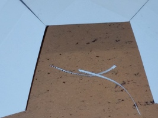

|
 |
|
 |
|
Math 629: History of Mathematics
|
|
|
When cutting along the dotted lines, cut through their middle, for the polygon you want is defined by the middle of the dotted lines.
The template on the left above has a hexagon in its centre.
There is a dotted line from the periphery to the central hexagon, which is surrounded by dotted lines.
You will want to cut along the dotted line to the central hexagon and cut it out intact, for it is used in the model, as is the path you cut
to it.
The solid black heptagons ideally should be cut so there is no white left on the heptagon and no black left on the scraps. A final note about cutting: We will be using the templates from left to right above in the construction. I would recommend keeping the cut pieces together in a folder, such as the envelope I sent everything to you in. I find it best to do this on a clean table with good light. I also find it a good idea to not keep the scraps in a single piece, for it makes it unweildy to manipulate the paper during cutting. When you are done, you will have the pieces shown at the right (and a few extra black heptagons). Note also the scissors, pencil, tape, and index card. |
| You will be taping the polygons to each other edge-to-edge. Each edge will get two (short) pieces of tape; these are placed across and not along the edge, so that the tape is roughly perpendicular to the edge. Place the first piece of tape up to, but not over, the vetex at the end of the edge, and then the second piece of tape up to, but not over, the vertex at the other end of the edge. The pictures at right show one, and then a second piece of tape applied to one edge. The contrast is not great, but you can see that the two pieces overlap in the middle, and each goes up against a vertex. It is important that the tape not cover the vertices (where three polygons meet), for the model is not flat at the vertices. Note that you will want to use one hand to steady the paper, and the other to apply the tape. I get the tape started with one finger, and then smooth it with another. It helps to not have too large pieces of tape. Also, if you do a nice job, it will help later as you will be writing on the tape. |
|
Remember to always tape an edge adjacent to one you have already taped, if there is such an edge to be taped, and to tape up to, but
not over each vertex.
After taping six of the seven sides of the heptagon, the slit you cut to the central hexagon has now opened up.
Ideally, that hexagon (or any of the other ones you have cut out) should fit in the space left.
But life may not be ideal, as we may see on the first picture at right.
The corners do not match up, and the overlap is a bit more than one milimetre for each.
The hexagon simply will not fit.
The solution is to carefully cut a very thin triangle off each of the two hexagons on the side, you may see the result of this in the second picture at right. This illustrates a general principle for this model. You may perform small surgeries like this to get pieces to fit, and the model is very forgiving. |
 |
 |